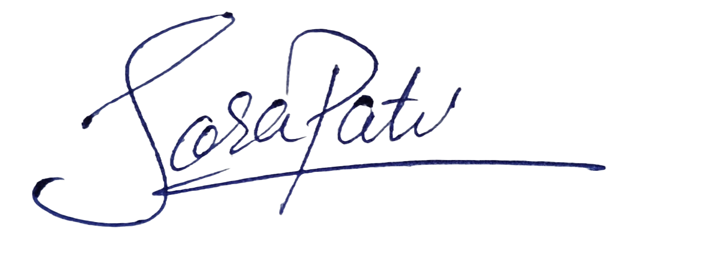
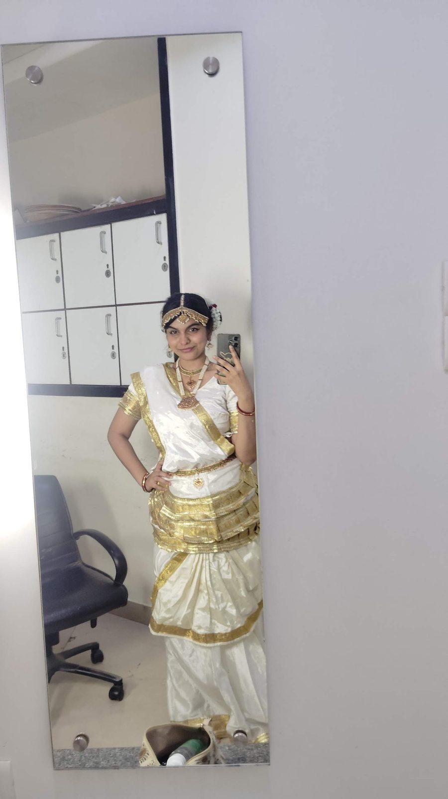
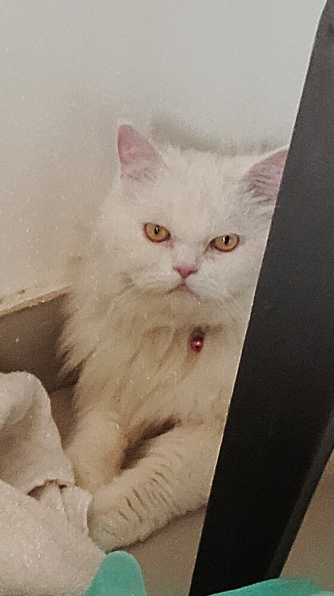
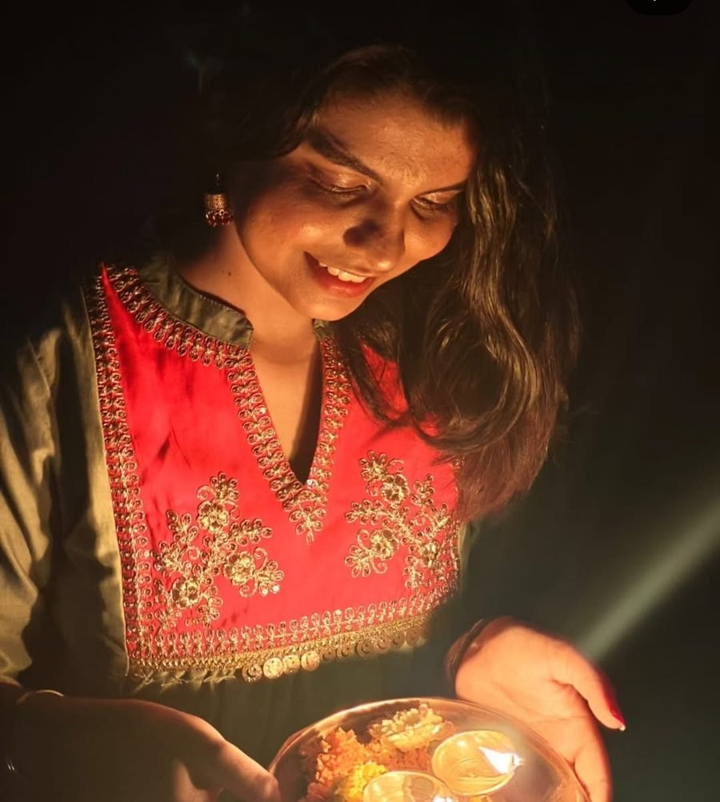

Rigor, rhythm, and scientific inquiry
I perceive biological systems through two complementary disciplines: as intricate quantitative networks decipherable through code, and as coordinated biological choreographies where every molecular interaction follows precise timing and structure.
My foundational discipline took shape not only across academic laboratories, but through more than eight years of formal training in Mohini Attam, an Indian classical dance form requiring deep physical balance, geometric precision, and sustained concentration. That same patience guides my computational work today, from handling complex multi-omics matrices in R to designing wet-lab protocols at NMIMS.
Beyond academic research, my interests include canvas painting, graphite illustration, conversational Korean and German, classical guitar, and quiet afternoons with my Persian cat. Meaningful scientific inquiry thrives when analytical rigor is paired with genuine creative perspective.


Mohini Attam
Eight years of training; Grade A++ final year graduation.

Persian Companion
Quiet companion during evening R computational sessions.

Cultural Heritage
Participation and hosting various cultural events